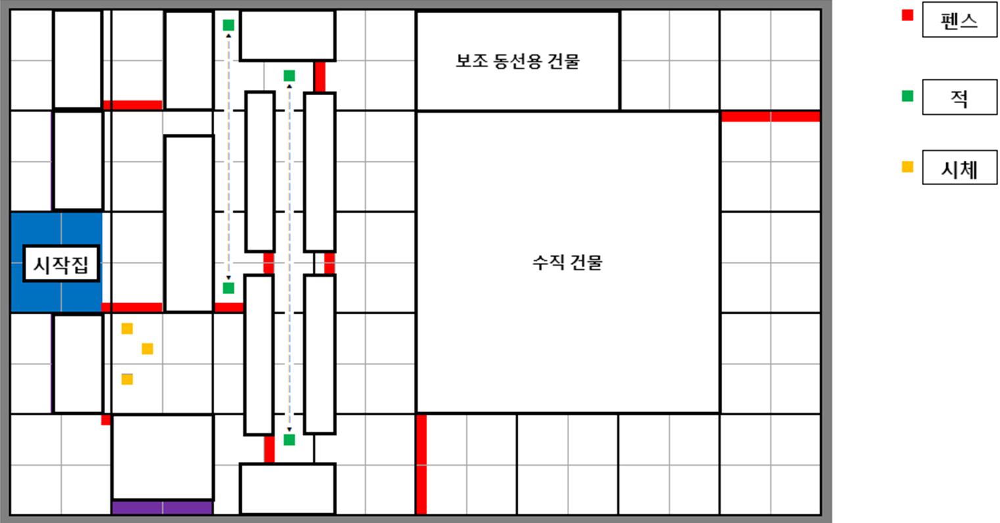
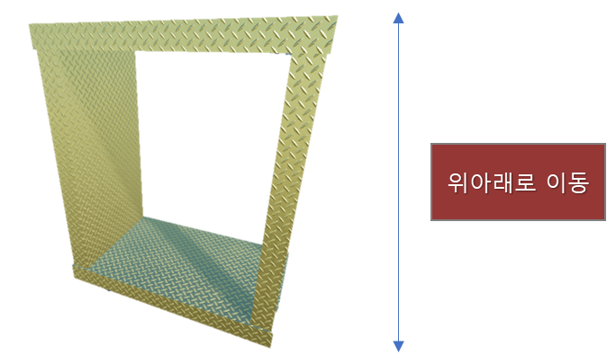
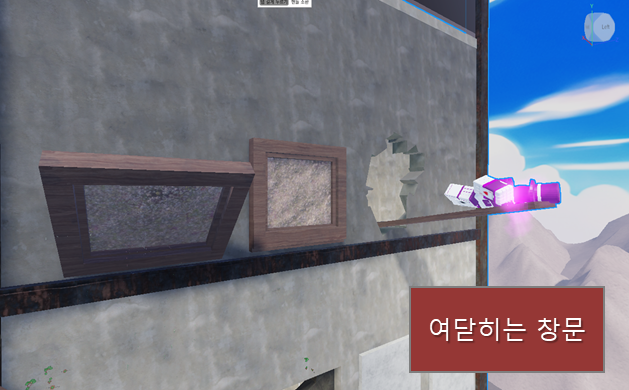
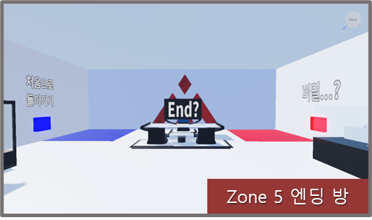
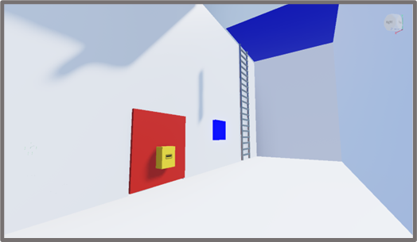
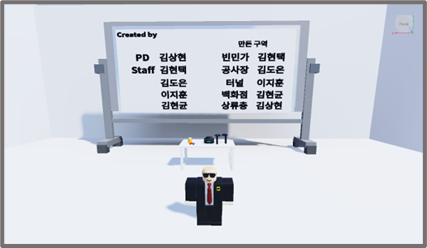

게임아카데미 기획자 과정 · 2023.09
파쿠르 플랫포머 게임 《Project R2R》
게임아카데미의 기획자 과정 커리큘럼의 일환으로 진행된 프로젝트입니다. Lua Script를 활용하여 로블록스 Obby 장르(파쿠르) 게임을 만들었습니다. 이 과정에서 기획 의도를 레벨에 실제로 녹여내는 실습과 스크립트를 이용한 동적 개체 제작 방법 등을 배웠습니다.
- 기간
- 2023.09.04 — 2023.09.22
15일 - 역할
- 레벨 디자인 · 동적개체 제작
- 엔진
- Roblox 에디터 · Lua Script
- 인원
- 게임기획자 지망생 5인
01
게임 소개
상류층과 하류층이 격리된 도시 속 가장 끔찍한 빈민가 지역에 거주하고 있는 주인공. 상류층 구역의 음모와 그들의 진실을 파헤치기 위해 빈민가 지역부터 위험한 장애물들을 돌파하며 도시 가장 높은 곳에 있는 시장실에 도착해야 합니다. 과연 무사히 도착하여 이 도시의 진실을 알아낼 수 있을까요?
1인칭 플랫포머파쿠르
02
담당 업무
01Zone 1 레벨 디자인
- 최초 시작 지역인 Zone 1을 튜토리얼 지역으로 설정하고 레벨 디자인

주동선 클리어 영상
보조동선 클리어 영상
02동적 요소 개발
- 로블록스 에디터를 사용, Lua 스크립트로 역동적인 플랫포밍 경험을 위한 동적 요소 개발


03엔딩 시스템 기획
- 5개의 Zone을 모두 통과하면 엔딩을 볼 수 있는 시스템 기획 및 구현



04FUN QA
- 각 Zone의 레벨 및 동적 요소 배치에 따른 기획 의도 반영 검증 — 난이도, 게임 컨셉 등
03
인원 구성
게임기획자 지망생 5인이 짧은 기간을 설정하여 신속하게 개발김상현 / 팀장
김현택 / 팀원
김도은 / 팀원
이지훈 / PM
김현균 / 팀원
04
게임 플레이
Roblox Player가 설치되어야 합니다.
Roblox에서 플레이하기 →